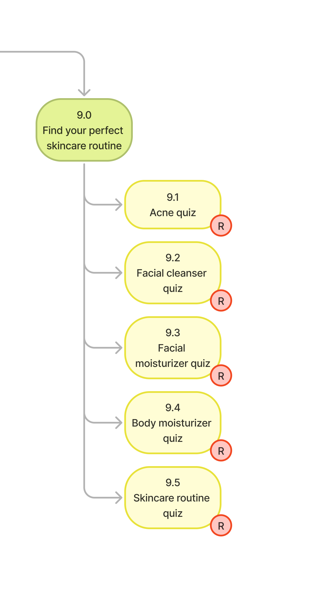

Decision · 01
Merged the quizzes into one hub
Insight
The quizzes were buried and split by concern, so finding help meant already knowing what was wrong.
Decision
Merge the separate quizzes into one top-level hub, named for the outcome people actually want.
Solution
Five scattered quizzes collapse into one hub: “Find your perfect skincare routine.”
Outcome
The tools that help people decide now sit where they look first.

The five scattered quizzes collapse into one hub.
R marks pages removed as standalone destinations; N marks newly added sections. Click to zoom.